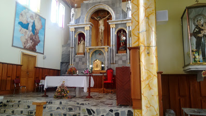
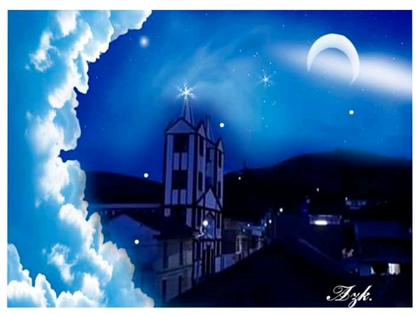
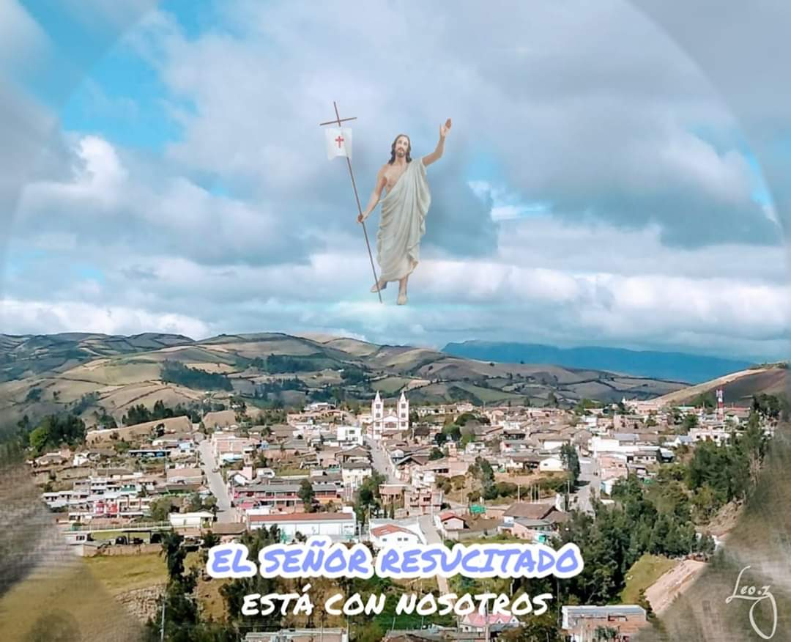
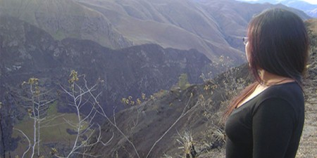
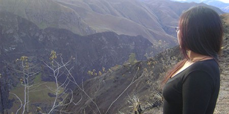

full Plataforma de turismo geológica de innovación Ospina -Nariño| Bienvenidos
Subscríbete a nuestra full Plataforma de turismo geológica de innovación Ospina -Nariño| Bienvenidos
BIENVENIDOS A NUESTRO PORTAFOLIO
LEE NUESTRO PORTAFOLIO ONLINE

INTRODUCCION
En este sitio web he tratado de aportar un granito de arena a mi municipio natal con mi conocimiento y destreza de mostrar a mi pueblo sus cualidades sus diversidades, sus paisajes que ilustran este hermoso lugar que es Ospina que está situado a sur del pais de Colombia con la expectativa de que sea conocido desde sus inicios hasta lo que hoy es, con mi conocimiento y mi perfil de ingeniero técnico en sistemas plasmare en este sitio web de toda lo que conforma mi región (campesinos ,costumbres , tradiciones , fiestas , paisajes ,folclor y demás aspectos que conforman mi Ospina)
Este proyecto esta diseña como un modelo de superacion y desde un punto de vista critico de dar y mostrar la esencia de un hermoso
lugar que me rodea mi querido Ospina es una pueblo lleno de mucha sabiduria y gente de buen vivir, personas trabajadoras que aman
y cuida los paisajes que los rodea .
Este es un proyecto que desde muchos años lo tenia en mente mostrar de una manera diferente a Ospina y hoy en dia con mi conocimiento de programador web lo puedo realizar
y sacar a flote este proyecto que es simple pero que tiene mucha esencia de que lo es Ospina su historia , sus creencias, sus tradiciones , sus festividades

les presento la esencia de mi querido OSPINA
NUESTRA INSPIRACION
Este proyecto nos hemos inspirado en nuestro entorno que nos rodea , mostrando y describiendo lo real de lo que hoy es Ospina.

NUESTROS SERVICIOS
TURISMO CULTURAL
En Ospina debes conocer el monumento a la Santísima Virgen de Lourdes, refrescarse en la piscina municipal Rojas Pinillas y conocer la hermosa cascada a los alrededores del municipio. La historia y la cultura van de la mano pues en cada espacio del tiempo dieron vida a lo que hoy son las tradiciones y mas auténticos valores de los hijos de nuestro municipio, por esto te recomendamos conocer las principales danzas de herencia ancestral, estas son: el trapichito, curiquinga y los mollejones. Si te gustan las fiestas no dudes de gozar en el mes de junio el día del campesino y celebrar las fiestas en honor a San Miguel.
Es innegable que estamos ligados históricamente a la religión y la naturaleza, con
una escasa intervención del hombre para fortalecer el turismo, a pesar de esto
cabe rescatar la importancia de monumentos y lugares naturales para promover
la cultura del turismo, los sitios de mayor importancia en este sentido son:
1. Monumento a la Santísima Virgen de Lourdes
2. Hermosa cascada a los alrededores de Ospina
3. Piscina municipal "Rojas Pinilla"
CONTEXTO RURAL
En la actualidad el turismo es parte esencial de la economia de cualquier region y departamento , por lo que se ha convertido en una actividad sumamente competitiva, a tal grado que los destinos turisticos localizados en mismo departamento compiten entre si , por esta razon es que es muy necesaria generar la promocion turistica de esta region que muy importante para la gente ospineña localida al sur de colombia


 


.jpg)